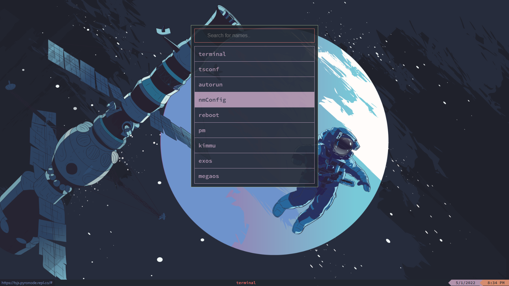

NetManager
NetManager is a Start-Menu like program that allows users to quickly access shortcuts to applications and commands.

Installing
Please use the
netbox-packages package manager to install NetManager as it is the easiest way.
root@netbox $ pmi netmanager
====================================
Your package is finished installing!
====================================
Usage
NetManager is complicated at first and can be very annoying to setup. I will try to make it as easy as possible.
To open NetManager, click the
` key on your keyboard.
To modify the contents of the menu, edit the nmConfig file. (NOTE: YOU MUST USE
TSE. THE DEFAULT ef TEXT EDITOR WILL NOT WORK.)
root@netbox $ tse nmConfig
TSE was opened in a new window.
The file will look somthing like this.
<li><a href="#" onclick="terminal();">terminal</a></li>
Here, you can make new list items and assign onclick values to them. Here is my nmConfig. (you can copy paste this)
<li><a href="#" onclick="terminal();">terminal</a></li>
<li><a href="#" onclick="tsconf();">tsconf</a></li>
<li><a href="#" onclick="terminal();document.getElementById('terminalinput').innerHTML = 'tse autorun';commandLookup();">autorun</a></li>
<li><a href="#" onclick="terminal();document.getElementById('terminalinput').innerHTML = 'tse nmConfig';commandLookup();">nmConfig</a></li>
<li><a href="#" onclick="location.reload()">reboot</a></li><li><a href="#" onclick="terminal();document.getElementById('terminalinput').innerHTML = 'pm';commandLookup();">pm</a></li>
<li><a href="#" onclick="terminal();document.getElementById('terminalinput').innerHTML = 'brew';commandLookup();">brew</a></li>
{kind=link}